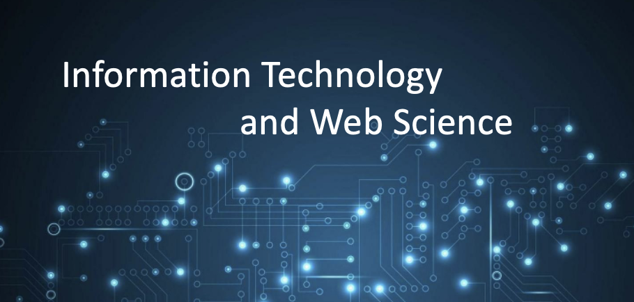
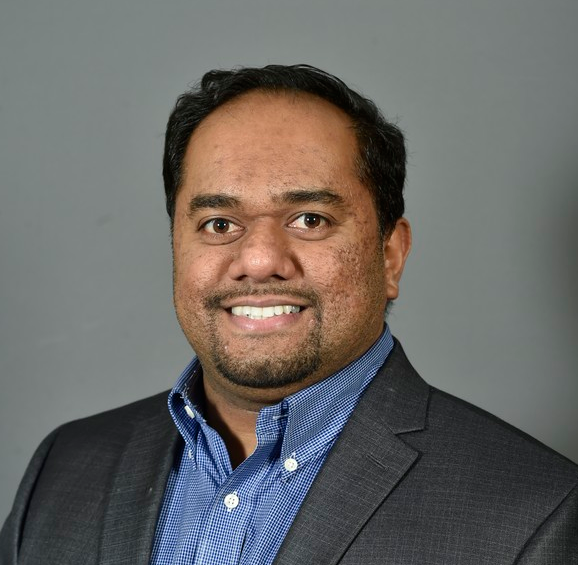

Programs

Brian Callahan
Lecturer
Brian Callahan is a Lecturer in ITWS. His research covers fields such as marginalized experiences in the technology sector, cybersecurity of robotics and operating systems software, and the design, implementation, and long-term maintenance of digital humanities software suites. Callahan oversees the Information Security and Science & Technology Studies concentrations for undergraduates and the Information Security concentration for graduates. He is a developer for the OpenBSD operating system, which ties his professional experiences together with his teaching.
Education
Ph.D., Rensselaer Polytechnic Institute, Science & Technology Studies
M.S., Rensselaer Polytechnic Institute, Science & Technology Studies
M.A., Monmouth University, Anthropology
B.H.A., Music & Anthropology, Carnegie Mellon University

Dr. Kathleen Fontaine
Adjunct Professor
Dr. Kathleen (Kathy) Fontaine joined RPI in 2014, after 25 years at NASA Goddard Space Flight Center, first as a contractor, and then as a civil servant. She is currently a Research Scientist in the Tetherless Web Constellation, where she developed and teaches a graduate course in Big Data Policy. Dr. Fontaine has also developed an Ethics module for the Capstone class, and has designed a Research Methods seminar that she hopes to develop into a full course.
Career
Dr. Fontaine’s government career included both supporting the development of, and then creating policies to enable data access nationally and internationally through the Committee on Earth Observations Satellites (CEOS) Working Group on Information Systems and Services (WGISS); in the Group on Earth Observations (GEO); and in the US interagency US Group on Earth Observations (USGEO). These relationships drove her professional and research interests in international organizations and their cultures, developing and implementing policies, and the intricacies of volunteer organizations. Dr. Fontaine is still actively involved with GEO, serving on their Programme Board on behalf of the Earth Science Information Partners (ESIP). Just prior to becoming joining ITWS, Dr. Fontaine served as the Managing Director for the Research Data Alliance/US, in support of research data sharing activities nationally and internationally.
Matthew Grill
Adjunct Professor
Matthew Grill, MBA, PMP is currently the instructor for Managing IT Resources and also works as a Product Owner and Innovation Lab Manager for Appatura, a Broadridge Company. He has assisted in Intro to ITWS and ITWS Capstone and guest lectured in Web Systems Development. Previously, Matt held senior level positions in project management and business operations consulting.
Experience
He holds a Master of Business Administration from the University of Massachusetts Amherst, received a Bachelor of Science degree in Information Technology and Management (dual major) from Rensselaer in 2009, and earned the Project Management Professional (PMP) certification from the Project Management Institute in 2012. While a student at Rensselaer, he was a member of Gamma Nu Eta (also serving as Vice President and President), Epsilon Delta Sigma, and Beta Gamma Sigma, and was class representative for the IT Student Leadership Council. He also received the Rensselaer Founders Award of Excellence in 2008.

Thilanka Munasinghe
Lecturer
Thilanka Munasinghe is a lecturer at ITWS with a focus on teaching areas related to Data Science, Data Analytics and Informatics. Prior to joining RPI, Thilanka was the CodeLab instructor at the West Virginia University’s LaunchLab, where he was instrumental in providing technical expertise and mentorship to student entrepreneurs of early-stage student-initiated start-ups. Thilanka has also contributed to large scale open source software projects such as MIT App Inventor. Thilanka received his BSc in Aerospace Engineering and MSc in Mechanical Engineering from West Virginia University, and has conducted research on microgravity systems and genetic algorithms.
Current Research Interests
Thilanka’s current research interests are on data-driven analytics using big data to address societal challenges in a diverse set of areas such as multi-disciplinary engineering applications, energy systems, urbanization, social networks, and health issues that impact society, by building novel early warning systems and internet of things applications.

Richard M. Plotka
Program Director
Areas of Instruction: Professor Plotka teaches Introduction to ITWS, ITWS Capstone, Web Systems Development and Web Science Systems Development in the Information Technology and Web Science program. In addition to his commitment to Information Technology and Web Science students, Professor Plotka has played an active role in the ITWS community by serving as a member of the IT Advisory Board from 1999-2012.
Research Interests
Professor Plotka is pursuing the latest trends in information technology, executive management, systems architecture, applications architecture, operations research management, and project management. As he contributes to the field of business and technology management, Professor Plotka calls upon his 20 years of experience in industry. He is currently the Chief Executive Office at Appatura, a SaaS Component Content Management and Automated Publishing solutions provider. He is actively involved in the application of Blockchain to challenges in Legal, Marketing, Music and Real Estate.